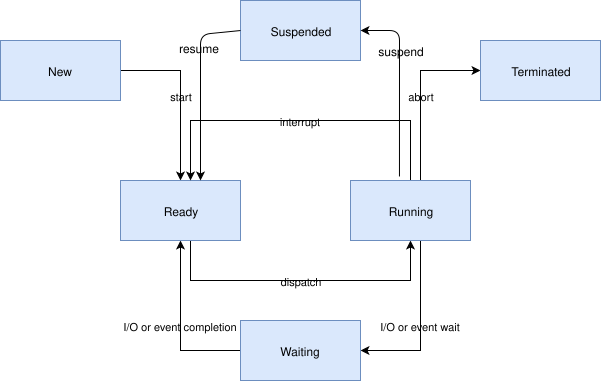

线程
备注
对 无线程运行 也有有限的支持。
本节介绍用于创建、调度和删除可独立执行的指令线程的内核服务。
线程（thread）是一种内核对象，用于执行过于冗长或复杂、不适合由 ISR 完成的应用程序处理。
应用程序可以定义任意数量的线程（仅受可用 RAM 限制）。每个线程通过线程创建时分配的线程 ID（thread id）引用。
线程具有以下关键属性：
栈区域，即用作线程栈的一块内存区域。栈区域的 大小 可以根据线程处理的实际需要进行调整。有专门的宏用于创建和操作栈内存区域。
线程控制块，供内核私下记录线程的元数据。它是
k_thread类型的一个实例。入口函数，在线程启动时被调用。最多可以向该函数传递 3 个 参数值。
调度优先级，指示内核调度器如何为该线程分配 CPU 时间。（参见 调度。）
一组 线程选项，使线程在特定情况下得到内核的特殊处理。（参见 线程选项。）
启动延迟，指定内核在启动该线程之前应等待多长时间。
执行模式，可以是特权模式（supervisor mode）或用户模式。默认情况下，线程以特权模式运行，可以访问特权 CPU 指令、整个内存地址空间和外设。用户模式线程的权限较少。这取决于
CONFIG_USERSPACE选项。参见 用户模式。
生命周期
线程创建
线程必须先创建才能使用。内核会初始化线程控制块以及栈的一端。线程栈的其余部分通常保持未初始化状态。
将启动延迟指定为 K_NO_WAIT 会指示内核立即开始执行线程。也可以通过指定超时值让内核延迟执行该线程，例如等待线程所用的设备硬件变为可用。
内核允许在线程开始执行之前取消延迟启动。如果线程已经启动，取消请求没有任何效果。延迟启动被成功取消的线程必须重新创建才能使用。
启动线程
以 K_FOREVER 作为启动延迟创建的线程不会被加入调度器的就绪队列，在被显式启动之前不会开始执行。k_thread_start() 函数用于启动这样的非活动线程，使其可以被调度。启动一个已经启动的线程没有任何效果。
当线程对象必须在某个时间点创建、但其执行需要推迟到应用程序完成额外的设置之后时，这种做法很有用。
线程终止
线程一旦启动，通常会永久执行下去。不过，线程也可以通过从其入口函数返回来同步地结束执行，这称为 终止。
终止的线程在返回之前负责释放它可能拥有的任何共享资源（例如互斥量和动态分配的内存），因为内核 不会 自动回收这些资源。
在某些情况下，线程可能希望睡眠到另一个线程终止为止。这可以通过 k_thread_join() API 实现。它会阻塞调用线程，直到超时到期、目标线程自行退出或目标线程被中止（无论是由于 k_thread_abort() 调用还是触发了致命错误）。
线程终止后，内核保证不会再使用该线程结构体。此后该结构体的内存可以用于任何用途，包括创建新线程。注意，线程必须已完全终止。这里存在竞态条件：线程自身的逻辑发出完成信号，另一个线程在内核处理完成之前就看到了这个信号。在正常情况下，应用程序代码应使用 k_thread_join() 或 k_thread_abort() 来同步线程的终止状态，而不应依赖应用程序逻辑内部发出的信号。
线程中止
线程可以通过 中止 异步地结束执行。如果线程触发了致命错误条件（例如解引用空指针），内核会自动中止该线程。
线程也可以被另一个线程（或它自己）通过调用 k_thread_abort() 中止。不过，通常更好的做法是通知线程优雅地自行终止，而不是中止它。
与线程终止一样，内核不会回收被中止线程所拥有的共享资源。
备注
对于应用程序能否重新创建一个被中止的线程，内核目前不作任何保证。
线程挂起
线程被 挂起 后，可以在不确定的时间内不被执行。函数 k_thread_suspend() 可用于挂起任何线程，包括调用线程本身。挂起一个已经挂起的线程不会产生额外的效果。
线程一旦被挂起，在另一个线程调用 k_thread_resume() 解除挂起之前，它不能被调度。
备注
线程可以使用 k_sleep() 使自己在指定时间段内不执行。但这与挂起线程不同，因为睡眠的线程在到达时间限制时会自动变为可执行。
线程状态
没有任何因素阻止其执行的线程被视为 就绪，可以被选为当前线程。
存在一个或多个阻止其执行的因素的线程被视为 非就绪，不能被选为当前线程。
以下因素会使线程变为非就绪：
线程尚未启动。
线程正在等待某个内核对象完成操作。（例如，线程正在获取一个不可用的信号量。）
线程正在等待超时发生。
线程已被挂起。
线程已终止或已中止。

备注
尽管上图看起来似乎表示 就绪 和 运行 是两种不同的线程状态，但这种理解并不正确。就绪 是一种线程状态，而 运行 是一种调度状态，只适用于处于 就绪 状态的线程。
线程栈对象
每个线程都需要自己的栈缓冲区，供 CPU 压入上下文。根据配置的不同，必须满足以下几项约束：
可能需要为内存管理结构预留额外的内存
如果启用了基于保护区的栈溢出检测，栈缓冲区前面必须紧邻一小块写保护的内存管理区域，用于捕获溢出。
如果启用了用户空间，必须预留一个固定大小的独立特权提升栈，作为处理系统调用的私有内核栈。
如果启用了用户空间，线程栈缓冲区的大小和对齐必须合适，以便能够设置一个与之完全吻合的内存保护区域。
对齐约束可能相当严格，例如有些 MPU 要求其区域的大小为 2 的幂，并按自身大小对齐。
因此，可移植代码不能简单地将任意字符缓冲区传给 k_thread_create()。有专门的宏用于静态实例化栈，它们以 K_KERNEL_STACK 和 K_THREAD_STACK 为前缀。
此外，也可以使用 k_thread_stack_alloc() 动态实例化栈，之后用 k_thread_stack_free() 释放。
仅内核栈
如果已知某个线程永远不会以用户模式运行，或者栈用于处理中断之类的特殊上下文，最好使用 K_KERNEL_STACK 宏定义栈。
这种栈可以节省内存，因为永远不需要设置 MPU 区域来覆盖栈缓冲区本身，内核也不需要为特权提升栈或只与用户模式线程相关的内存管理数据结构预留额外空间。
用户模式代码试图使用以这种方式声明的栈时，会使调用者发生致命错误。
如果未启用 CONFIG_USERSPACE，K_THREAD_STACK 系列宏与 K_KERNEL_STACK 系列宏的效果完全相同。
线程栈
如果已知某个栈需要承载用户线程，或者无法确定这一点，请使用 K_THREAD_STACK 宏定义该栈。这可能会占用更多内存，但这样的栈对象适合承载用户线程。
如果未启用 CONFIG_USERSPACE，K_THREAD_STACK 系列宏与 K_KERNEL_STACK 系列宏的效果完全相同。
线程优先级
线程的优先级是一个整数值，可以是负数，也可以是非负数。数值较小的优先级高于数值较大的优先级。例如，调度器认为优先级为 4 的线程 A 比优先级为 7 的线程 B 优先级 更高；同样，优先级为 -2 的线程 C 比线程 A 和线程 B 的优先级都高。
调度器根据线程的优先级将线程分为两类。
协作式线程（cooperative thread）的优先级为负值。协作式线程一旦成为当前线程，就会一直保持为当前线程，直到它执行某个使自己变为非就绪的操作。
可抢占线程（preemptible thread）的优先级为非负值。可抢占线程成为当前线程后，只要有协作式线程或优先级更高或相同的可抢占线程变为就绪，它随时可能被取代。
线程启动后，可以调高或调低其初始优先级值。因此，通过改变优先级，可抢占线程可以变为协作式线程，反之亦然。
备注
调度器不会依据启发式规则重新调整线程的优先级。线程优先级只会应应用程序的请求而设置和更改。
内核支持的线程优先级数量几乎不受限制。配置选项 CONFIG_NUM_COOP_PRIORITIES 和 CONFIG_NUM_PREEMPT_PRIORITIES 分别指定每类线程的优先级数量，由此得到以下可用的优先级范围：
协作式线程：(-
CONFIG_NUM_COOP_PRIORITIES) 到 -1抢占式线程：0 到 (
CONFIG_NUM_PREEMPT_PRIORITIES- 1)

例如，配置 5 个协作式优先级和 10 个抢占式优先级，得到的范围分别为 -5 到 -1 和 0 到 9。
Meta-IRQ 优先级
启用后（参见 CONFIG_NUM_METAIRQ_PRIORITIES），在优先级空间的最高（数值最小）端会有一个特殊的协作式优先级子类：meta-IRQ 线程。它们按照其正常优先级进行调度，但还具有一种特殊能力：可以抢占所有较低优先级的其他线程（以及其他 meta-IRQ 线程），即使这些线程是协作式线程和/或已获取调度器锁。不过，meta-IRQ 线程仍然是线程，仍然可以被任何硬件中断打断。
备注
被 meta-IRQ 线程抢占的协作式（或已锁定调度器的）线程，在 meta-IRQ 线程完成后恢复执行时，会位于同一个 CPU 上（前提是它既没有被挂起也没有被中止）。这有助于确保这些线程在查询与自身 CPU 相关的属性的过程中，不会意外地被调换到另一个 CPU 上。
这种行为使得解除 meta-IRQ 线程的阻塞（通过任何方式，例如创建它、调用 k_sem_give() 等）在由较低优先级线程执行时相当于一次同步系统调用，在真正的中断上下文中执行时则相当于类似 ARM 的“挂起 IRQ”（pended IRQ）。该功能的用意是在驱动子系统中实现中断“下半部”（bottom half）处理和/或“tasklet”功能。线程一旦被唤醒，就保证会在当前 CPU 返回应用程序代码之前运行。
与其他操作系统中的类似功能不同，meta-IRQ 线程是真正的线程，运行在自己的栈上（该栈必须按常规方式分配），而不是运行在每个 CPU 的中断栈上。在受支持的架构上使用 IRQ 栈的设计工作尚未完成。
注意，由于这打破了 Zephyr API 对协作式线程的承诺（即在当前线程主动阻塞之前，操作系统不会调度其他线程），应用程序代码应当非常谨慎地使用它。这些线程并不只是优先级非常高的线程，也不应被当作这样的线程使用。
线程选项
内核支持一小组线程选项（thread options），使线程在特定情况下得到特殊处理。与线程关联的选项集在创建线程时指定。
不需要任何线程选项的线程，其选项值为零。需要线程选项的线程按名称指定选项；如果需要多个选项，使用 | 字符分隔（即使用按位或运算符组合选项）。
支持以下线程选项。
K_ESSENTIAL该选项将线程标记为关键线程（essential thread）。这会指示内核将该线程的终止或中止视为致命系统错误。
默认情况下，线程不被视为关键线程。
K_SSE_REGS这个 x86 专用选项表示线程使用 CPU 的 SSE 寄存器。另请参见
K_FP_REGS。默认情况下，内核在调度线程时不会尝试保存和恢复这些寄存器的内容。
K_FP_REGS该选项表示线程使用 CPU 的浮点寄存器。这会指示内核在调度线程时采取额外步骤保存和恢复这些寄存器的内容。（更多信息参见 浮点服务。）
默认情况下，内核在调度线程时不会尝试保存和恢复这些寄存器的内容。
K_USER如果启用了
CONFIG_USERSPACE，该线程将以用户模式创建，权限较少。参见 用户模式。否则该标志不起作用。K_INHERIT_PERMS如果启用了
CONFIG_USERSPACE，该线程将继承父线程拥有的所有内核对象权限，但父线程对象本身除外。参见 用户模式。
线程自定义数据
每个线程都有一个 32 位的自定义数据（custom data）区域，只能由线程自身访问，应用程序可以将其用于任何用途。线程的自定义数据默认值为零。
备注
ISR 不支持自定义数据，因为它们在单一的共享内核中断处理上下文中运行。
默认情况下，线程自定义数据支持处于禁用状态。可以使用配置选项 CONFIG_THREAD_CUSTOM_DATA 启用该支持。
k_thread_custom_data_set() 和 k_thread_custom_data_get() 函数分别用于写入和读取线程的自定义数据。线程只能访问自己的自定义数据，而不能访问其他线程的自定义数据。
以下代码使用自定义数据功能记录每个线程调用某个特定例程的次数。
备注
显然，只能有一个例程使用这种技术，因为它独占了自定义数据功能。
int call_tracking_routine(void)
{
uint32_t call_count;
if (k_is_in_isr()) {
/* ignore any call made by an ISR */
} else {
call_count = (uint32_t)k_thread_custom_data_get();
call_count++;
k_thread_custom_data_set((void *)call_count);
}
/* do rest of routine's processing */
...
}
可以将自定义数据用作指向线程所拥有的数据结构的指针，让例程借助线程自定义数据访问线程特定的信息。
线程名称
启用 CONFIG_THREAD_NAME 后，可以为每个线程关联一个人类可读的名称。名称主要用于辅助调试、日志记录和 shell 内省；内核不会将其用于调度。
可以通过以下两种方式之一分配线程名称：
静态方式：向
K_THREAD_DEFINE传入名称。运行时方式：使用
k_thread_name_set()。所提供的字符串必须在线程的整个生命周期内保持有效，因为内核只保留指向它的指针。
可以使用 k_thread_name_get() 获取线程名称，它返回指向名称字符串的指针；也可以使用 k_thread_name_copy()，它将名称复制到调用者提供的缓冲区中。在用户模式下，调用线程可能无权访问存放另一个线程名称的内存，因此复制版本是安全的选择。
如果未启用 CONFIG_THREAD_NAME，k_thread_name_set() 会返回错误，k_thread_name_get() 会返回 NULL。
线程内省
内核提供了多个用于在运行时检查线程的接口。
- 识别当前线程
k_current_get()返回当前正在执行的线程的线程 ID（k_tid_t）。可以将此 ID 传给其他线程 API，对调用线程进行操作。- 读取线程的优先级
k_thread_priority_get()返回线程当前的调度优先级。它反映线程创建以来所做的任何更改，例如通过k_thread_priority_set()所做的更改。- 获取线程的状态
k_thread_state_str()将线程当前状态的人类可读表示（例如pending、suspended或ready）写入调用者提供的缓冲区。它用于诊断输出，不应由程序解析。- 遍历所有线程
启用
CONFIG_THREAD_MONITOR后，k_thread_foreach()会为系统中的每个线程调用一次调用者提供的回调。在遍历期间，它持有一个内部锁，阻止线程的创建和终止。这保证了线程列表快照的一致性，但可能引入与线程数量成正比的延迟。k_thread_foreach_unlocked()是一个延迟更低的变体，它在每次调用回调时释放该锁，代价是得到的视图一致性不那么严格。- 查询栈使用情况
启用
CONFIG_INIT_STACKS和CONFIG_THREAD_STACK_INFO后，k_thread_stack_space_get()会报告线程栈中剩余的未使用字节数，该值通过扫描栈中未使用（仍保持初始化值）的区域计算得出。它是对构建时栈分析工具以及下文所述运行时栈安全功能的补充。- 查询待处理的超时
阻塞在定时操作（例如
k_sleep()或带超时的内核对象操作）上的线程有一个待处理的超时。可以用k_thread_timeout_remaining_ticks()以节拍为单位查询其剩余时长，用k_thread_timeout_expires_ticks()查询它将在哪个绝对系统节拍到期。如果线程没有待处理的超时，两者都返回零。
实现
创建线程
创建线程的步骤是：定义其栈区域和线程控制块，然后调用 k_thread_create()。
栈区域可以使用 K_THREAD_STACK_DEFINE 或 K_KERNEL_STACK_DEFINE 静态分配，以确保它在内存中被正确设置。
栈的大小参数必须是以下三种值之一：
传给
K_THREAD_STACK或K_KERNEL_STACK系列栈实例化宏的原始请求栈大小。对于使用
K_THREAD_STACK系列宏定义的栈对象，取K_THREAD_STACK_SIZEOF()对该对象的返回值。对于使用
K_KERNEL_STACK系列宏定义的栈对象，取K_KERNEL_STACK_SIZEOF()对该对象的返回值。
另外，也可以使用 k_thread_stack_alloc() 动态分配栈区域，并使用 k_thread_stack_free() 释放。
线程创建函数返回线程 ID，可用它引用该线程。
以下代码创建一个立即启动的线程。
#define MY_STACK_SIZE 500
#define MY_PRIORITY 5
extern void my_entry_point(void *, void *, void *);
K_THREAD_STACK_DEFINE(my_stack_area, MY_STACK_SIZE);
struct k_thread my_thread_data;
k_tid_t my_tid = k_thread_create(&my_thread_data, my_stack_area,
K_THREAD_STACK_SIZEOF(my_stack_area),
my_entry_point,
NULL, NULL, NULL,
MY_PRIORITY, 0, K_NO_WAIT);
另外，也可以调用 K_THREAD_DEFINE 在编译时声明线程。注意，该宏会自动定义栈区域、控制块和线程 ID 变量。
以下代码与上面的代码段效果相同。
#define MY_STACK_SIZE 500
#define MY_PRIORITY 5
extern void my_entry_point(void *, void *, void *);
K_THREAD_DEFINE(my_tid, MY_STACK_SIZE,
my_entry_point, NULL, NULL, NULL,
MY_PRIORITY, 0, 0);
备注
k_thread_create() 的延迟参数是 k_timeout_t 值，因此 K_NO_WAIT 表示立即启动线程。K_THREAD_DEFINE 的对应参数是以整数毫秒表示的时长，因此等效的参数为 0。
以下代码动态分配一个线程栈，等待线程结束（join），然后释放动态分配的线程栈。
extern void my_entry_point(void *, void *, void *);
k_tid_t my_tid;
void *my_stack_area;
my_stack_area = k_thread_stack_alloc(CONFIG_DYNAMIC_THREAD_STACK_SIZE);
my_tid = k_thread_create(&my_thread_data, my_stack_area,
CONFIG_DYNAMIC_THREAD_STACK_SIZE,
my_entry_point,
NULL, NULL, NULL,
MY_PRIORITY, 0, K_NO_WAIT);
k_thread_join(my_tid, K_FOREVER);
k_thread_stack_free(my_stack_area);
用户模式约束
本节仅适用于启用了 CONFIG_USERSPACE 且用户线程试图创建新线程的情况。此时仍使用 k_thread_create() API，但必须满足额外的约束，否则调用线程将被终止：
调用线程必须同时拥有子线程参数和栈参数的权限；两者都被内核作为内核对象进行跟踪。
子线程对象和栈对象必须处于未初始化状态，即该线程当前未在运行，并且栈内存未被使用。
传入的栈大小参数必须小于或等于栈对象声明时的边界。
必须使用
K_USER选项，因为用户线程只能创建其他用户线程。不得使用
K_ESSENTIAL选项，用户线程不能被视为关键线程。子线程的优先级必须是有效的优先级值，并且等于或低于父线程的优先级。
降低权限
如果启用了 CONFIG_USERSPACE，以特权模式运行的线程可以使用 k_thread_user_mode_enter() API 单向转换为用户模式。这是一个单向操作，会重置线程的栈内存并将其清零。该线程将被标记为非关键线程。
终止线程
线程通过从其入口函数返回来终止自身。
以下代码演示线程终止的几种方式。
void my_entry_point(int unused1, int unused2, int unused3)
{
while (1) {
...
if (<some condition>) {
return; /* thread terminates from mid-entry point function */
}
...
}
/* thread terminates at end of entry point function */
}
如果启用了 CONFIG_USERSPACE，中止线程还会将线程对象和栈对象标记为未初始化，以便重新使用。
运行时统计
如果启用了 CONFIG_THREAD_RUNTIME_STATS，可以收集和获取线程运行时统计信息，例如线程执行的总周期数。
默认情况下，运行时统计使用默认的内核定时器收集。对于某些架构、SoC 或开发板，可以通过计时函数（timing functions）使用分辨率更高的定时器。可以通过 CONFIG_THREAD_RUNTIME_STATS_USE_TIMING_FUNCTIONS 启用这些定时器。
示例如下：
k_thread_runtime_stats_t rt_stats_thread;
k_thread_runtime_stats_get(k_current_get(), &rt_stats_thread);
printk("Cycles: %llu\n", rt_stats_thread.execution_cycles);
可以使用 k_thread_runtime_stats_all_get() 获取系统中所有线程的合计统计信息，它报告所有线程（包括空闲线程）的总运行时间使用情况。这对计算整体 CPU 利用率很有用。
启用 CONFIG_SCHED_THREAD_USAGE 后，可以在运行时使用 k_thread_runtime_stats_enable() 和 k_thread_runtime_stats_disable() 按线程开启或关闭统计收集。可以使用 k_thread_runtime_stats_is_enabled() 检查某个线程当前是否正在收集统计信息。对不需要测量的线程禁用统计收集，可以减少每次上下文切换时的记录开销。
运行时栈安全
启用 CONFIG_THREAD_RUNTIME_STACK_SAFETY 后，内核提供在运行时扫描线程栈的例程，用于确定栈中还有多少未使用的空间。如果发现未使用的栈空间已低于某个可按线程配置的阈值，就会调用用户定义的处理函数。
该功能供监控软件使用。例如，处理函数可以记录一条警告、挂起或中止出问题的线程，甚至重启系统。它让系统能够在栈耗尽 之前 做出反应，是对构建时栈分析工具和基于硬件的栈溢出检测的补充。
每个线程都有一个以字节为单位的 未使用栈阈值。当栈安全检查发现线程的未使用栈空间低于该阈值时，就会调用所提供的处理函数。阈值为 0 字节（默认值）时，对该线程禁用该检查。新创建线程所用的默认阈值由 CONFIG_THREAD_RUNTIME_STACK_SAFETY_DEFAULT_UNUSED_THRESHOLD_PCT 得出，该选项以每个线程栈总大小的百分比表示阈值。
可以在运行时设置或查询单个线程的阈值：
k_thread_runtime_stack_unused_threshold_pct_set()以线程栈总大小的百分比（0 到 99）设置阈值。k_thread_runtime_stack_unused_threshold_set()以绝对字节数设置阈值。k_thread_runtime_stack_unused_threshold_get()获取当前阈值（以字节为单位）。
实际的检查由两个例程执行。两者都接受一个指针，用于在返回时接收未使用的栈空间大小；还接受一个 k_thread_stack_safety_handler_t 处理函数（外加一个用户参数），在越过阈值时调用：
k_thread_runtime_stack_safety_full_check()扫描整个栈，计算未使用空间的确切大小。k_thread_runtime_stack_safety_threshold_check()执行简化扫描，只查找线程已越过其配置阈值的迹象。它比完整检查开销小，但无法得到未使用空间的确切值。
以下示例将一个线程配置为：当其未使用栈空间低于栈总大小的 10% 时调用处理函数：
void stack_safety_handler(const struct k_thread *thread,
size_t unused_space, void *arg)
{
printk("Thread %p low on stack: %zu bytes unused\n",
thread, unused_space);
}
/* Trigger the handler once less than 10% of the stack remains unused */
k_thread_runtime_stack_unused_threshold_pct_set(my_tid, 10);
/* Periodically check the thread from a monitoring context */
k_thread_runtime_stack_safety_full_check(my_tid, NULL,
stack_safety_handler, NULL);
建议用法
使用线程处理无法在 ISR 中完成的处理工作。
使用不同的线程处理逻辑上相互独立、可以并行执行的处理操作。
配置选项
相关配置选项：
API 参考
- thread_apis
- thread_stack_api